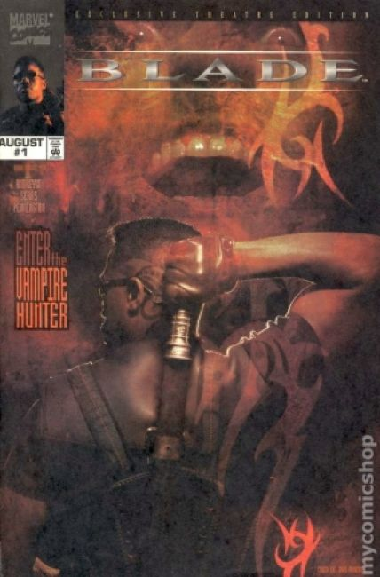
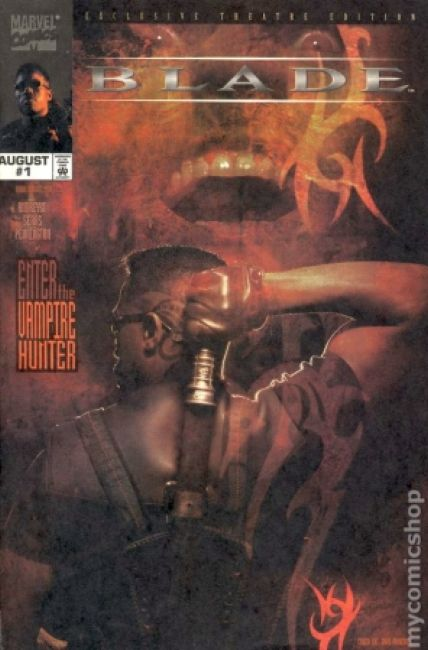
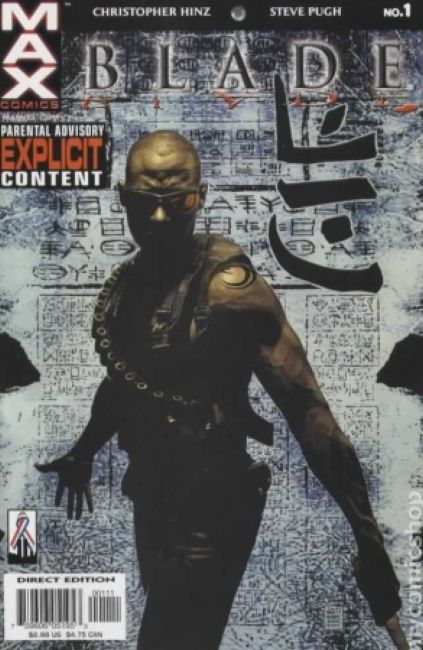
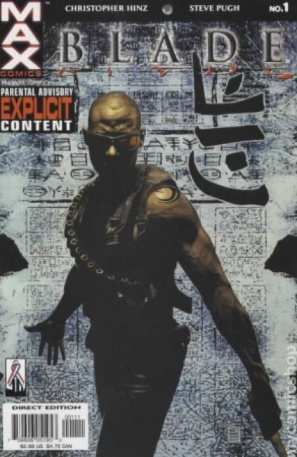

 


Blade's first appearance was in the comic book The Tomb of Dracula #10 (July 1973) as a supporting character. Other pre-movie appearances include:
1997 Blade (movie preview):
Wesley Snipes Photo Cover. Written by Marv Wolfman, art by Gene Colan and Tom Palmer.
1998 Blade (movie adaptation)
In 1967, a pregnant woman is attacked by a vampire while giving birth. Doctors are able to save her baby, but the woman dies of infection.
Thirty years later, the child has become the vampire hunter Blade. He raids a rave club owned by the vampire Deacon Frost. Police take one of the vampires to the hospital, where he feeds on hematologist Karen Jenson and escapes. Blade takes Karen to a safe house where she is treated by his old friend Abraham Whistler.
Whistler explains that he and Blade have been waging a secret war against vampires using weapons based on their elemental weaknesses, such as sunlight and silver. As Karen is now "marked" by the bite of a vampire.
1998 Blade (series 1):
Written by Don McGregor. Art by Brian Hagan and Sandu Florea.
Deadly debut issue! At the moment a vampire killed his mother, Blade was born! Now, armed with unique powers and an array of razor-sharp weapons, he stalks the night to eliminate the vampire plague that has descended upon humanity!
Blade 2: Bloodhunt (movie adaptation)
Written by David Goyer, Steve Gerber. Art by Alberto Ponticelli
Half vampire, half human, all hero! The sequel will be just as fast-paced and action-packed, if not more, as the original film, so you won't want to miss out on the vampire hunter's next adventure! What new supernatural menace threatens the world? Only the brooding Blade can save us from it!
2002 Blade (series 2):
Cover by Tim Bradstreet and Christopher Hinz. Written by Steve Pugh.
Blade is back, and he's hunting a new threat: the Tryk, an extremely vicious mutant vampire species. Complicating the situation is the appearance of the Seven, a secret society dedicated to the destruction of supernatural evil. Incredibly, they see Blade as the most dangerous vampire of all! And at the same time, an ancient vampiric text sends Blade on a quest to renounce his monstrous heritage and become fully human at last. But can a mere human withstand the murderous Tryk?
2006 Blade (series 3):
Written by Marc Guggenheim. Art by Howard Chaykin, cover by Marko Djurdjevic.
Spider-Man-a vampire, Dracula, Lord of the Undead, a classroom of bloodsucking 4th graders, and that's just the first five pages.